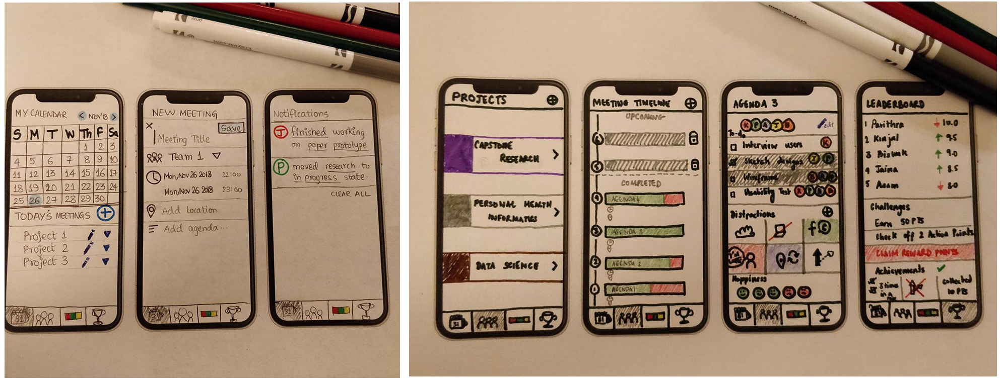

Team Meetings Made Easier
Overview
Meetings are typically a necessity for any organization or academia. They are opportunities for members of the team to exchange ideas and discuss objectives. Effective meetings can fulfill goals while saving time, money and talent. Properly managed team meetings provide a venue to set clear goals, assign tasks and expedite the decision-making process. As graduate students, we were simultaneously working on multiple team projects and they find it difficult to keep track of each meeting. Having faced these problems on a daily basis motivated us to address this issue and come up with a design solution to create a healthy meeting environment. Huddle, our product concept, is a self-reflection tool that guides users through a visual data exploration. They can schedule meetings, stay on track of their action points, reflect on how the team is progressing in the project and make improvements to their current situation through the self as well as group reflection.
Role: UX Researcher, Interaction Designer
Methods: One-on-one interviews, Competitive Analysis, Pilot Tests, Usability Study, Data Analysis and Visualization, Information Visualization, Data scoping
Team: Biswaksen Patnaik, Jaina Gandhi, Kinjal Chavda, Anam Bhatia
Duration: 8 weeks

The Goal
The project intended to bring about social data tracking and envisioning a design idea as a result using various information and data visualization techniques. We set to first brainstorm more on the problem space, essentially to understand the painpoints.
What factors affect productivity of a team meeting?
Despite the availability of numerous productivity monitoring/enhancing tools, we realized there are innumerable tertiary factors that affect individual and group productivity. Tertiary factors may be as simple as environmental conditions such as the weather: (say) there is a thunderstorm on the day of the group meet that makes it difficult for the members to meetup comfortably. Other factors include distractions, or technical difficulties. These small factors usually go unnoticedand untracked with the tools available out there. Through research, we intended to delve deeper into such factors and come up with a design solution to solve this problem.
Process
The design of Huddle followed an iterative process starting with idea generation, conducting one-on-one interviews to understand needs of the user space, brainstorming ideas, storyboarding and sketching concepts, prototyping and finally usability testing of our prototype. We also wanted to keep the project wholly user-centered so we involved our users in all of the stages to receive feedback. At every stage, based on the feedback received, we made appropriate improvements to bridge any gaps.
Interviews and Brainstorms
To scope down the project, we set out to understand the problems faced by students in the academia. This user group was also most relevant to us as we could relate to them. We conducted 20 interviews with studies, starting by briefing them about our ideas and intentions, and asked them to recall some of their previous team meetings. Our participants reflected on their experiences during those meetings by walking us through their expectations, what went well for them, what went wrong, how they resolved conflicts and the kind of workarounds they employed to achieve that.
With the insights received from the interviews, we brainstormed on the variables that could be included in our reflection tool for teams to track their data.
Sketches and Storyboarding
We narrowed down the variables we identified from the brainstorming sessions to the ones which mattered the most for the students. We identified two scenarios - deciding logistics in an informal project meeting and staggered arrivals of team members leading to unmet agenda. We developed storyboards for the aforementioned scenarios.
Developing the storyboards opened our minds to sketches and low-fidelity wireframes of how we could solve our design problem. With the two scenarios as our major themes, we made several sketches that would tackle the problem at hand.
Usability Testing and Beyond - Emerging of designs
We conducted usability tests on our low-fidelity prototypes and the feedback that we received on them helped informed the design of our final mockups. Our concept Huddle is a team productivity tracking tool that allows people to schedule meetings, stay on track of their action points, reflect on how their team is progressing in a project and make improvements to their current situation by enabling self as well as group reflection.
Huddle is meant for students working on projects in academic settings who wish to reflect upon how various factors affect the way they work in a team meeting.
Huddle helps users stay on track with their meeting schedules. Users can schedule a meeting for a specific project team based on the availability of all team members. This meeting appointment is then reflected on the calendars of all the members. This promotes better communication with the team and helps track meeting logistics easily.
The design lets users keep track of action points and hold-ups experienced during a meeting. In this way, users can keep a check on their own progress for the team project as well as how the other team members are progressing on their action points. The use of leaderboards to encourage healthy work behavior is also an effective application of gamification to bring positive behavior change through social-comparison.
Team members can also reflect on their working habits using the Stats section, which aids in minimizing hold-ups. The productivity trends and its correlation with tertiary factors (hold-ups) not only helps in the identification of barriers but also enables self-reflection, which would further motivate teams to overcome these barriers.
Prototype Video
Challenges and Learnings
It was very challenging for us to pick our variables that affected productivity in an academic setting as there were a lot of ever-changing variables. Some seemed really basic but defined clear issues for certain teams. We overcame this barrier by conducting more interviews and stepping on the user's shoes to understand what typically defined their meeting processes and outcomes.